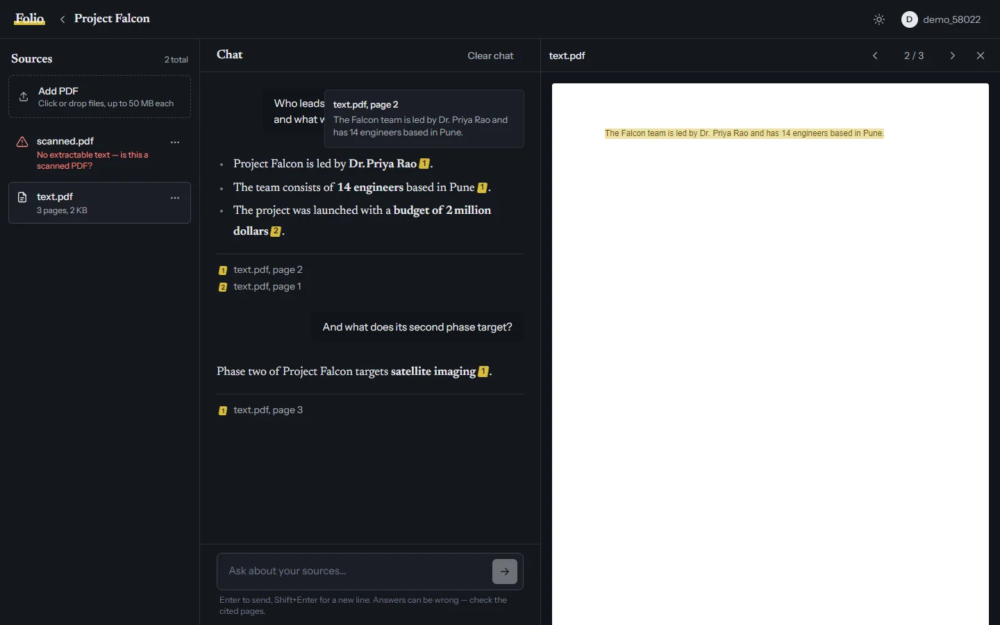

Sources
PDF, Word, PowerPoint, Markdown, text
Up to 50 MB each, indexed in the background with live progress: “OCR on page 3 of 40”. Scanned pages are read with RapidOCR, offline. Slides are cited as “slide N”, speaker notes included.
FastAPI · Postgres + pgvector · React · Groq
Folio is a NotebookLM-style app for your own documents: PDFs, Word files, PowerPoint decks, Markdown and pasted text. Ask a question and every claim in the answer carries a citation. Click it and the source opens at that page, with the passage highlighted.

The model sees numbered excerpts and must cite every claim as a marker. Folio parses the markers into sources, drops any that don't match a retrieved excerpt, and warns when part of an answer goes uncited. Try the chips below.
Who leads Project Falcon, and what was its budget?
High confidence4 of 4 claims cited
A demo modelled on the Project Falcon notebook in Folio's screenshots. In the app, hovering a chip shows the snippet and clicking opens the real PDF at that page.
Embeddings and reranking run locally on the CPU, so the only calls leaving your machine go to Groq's free tier: one small call to plan and one to answer. Every answer keeps a full trace you can open: queries, every candidate with its vector, keyword, fused and rerank scores, timings and tokens.
One small, cached LLM call rewrites a follow-up into a standalone question. Skipped when there's nothing to do; on a rate limit the question is searched as asked.
Each query is embedded locally with bge-small-en-v1.5, then runs pgvector (HNSW) and Postgres full-text search. Reciprocal rank fusion keeps 30 candidates.
A local cross-encoder, ms-marco-MiniLM-L6-v2, reads the question with each candidate. The top six go on, each with its neighbouring chunks.
Abstain only when the reranker and embedding similarity are both weak. Then Folio says so and shows the closest passages instead of guessing.
Excerpts go to the model labelled [C1]…[C6] with file, page and section. Stage names, then tokens, stream over Server-Sent Events.
Markers become structured sources. Each claim and excerpt pair is verified by the cross-encoder; uncited answers are refused or flagged.
The evaluation harness asks 50 questions with known answer pages over four sample PDFs: factual, exact-term, paraphrased, follow-up, and 7 the documents can't answer. It runs the real pipeline once per configuration, adding one stage each time.
of citations point to a correct page
of claims are supported by the cited excerpts
of expected key facts are stated
unanswerable questions handled: 2 refused by the gate, 5 declined by the model
Answers graded by a second model, openai/gpt-oss-20b. The reranker is the biggest single win; the gate never refused an answerable question.
Sources
Up to 50 MB each, indexed in the background with live progress: “OCR on page 3 of 40”. Scanned pages are read with RapidOCR, offline. Slides are cited as “slide N”, speaker notes included.
Quizzes
Easy, medium or hard, every question cited. Review mistakes replays only the ones you got wrong.
Flashcards
Mark Got it or Still learning, review the misses, export to Anki or CSV.
Studio
One click each, every item with a citation chip. A timeline is refused when the sources have no dated events.
Tables
Tables become Markdown and are chunked on their own, the header repeated, so answers can read rows and columns.
Trace
The rewritten query, every candidate passage with vector, keyword, fused and rerank scores, which ones the model saw, per-stage timings and token counts.
Folio never builds storage paths from filenames, checks ownership on every route, and keeps suspicious chunks out of both retrieval and the model's context. The scanner records the rule it matched instead of silently dropping a source.
Encrypted files, scripts and launch actions, embedded files and excessive page counts are rejected before storage.
Must be valid archives with no macros and a capped uncompressed size.
Likely injection passages are kept out of the context. Source blocks are delimited and the model is told never to follow them.
Normalised before chunking, so hidden characters can't smuggle instructions.
Optional per notebook: Aadhaar, PAN, email and Indian phone numbers are masked in what search and the LLM see.
Hashed passwords, httpOnly same-origin session cookies, 10 failed logins per 15 minutes before a 429.
You need Docker Desktop and a free Groq API key. The first build takes several minutes: it downloads CPU-only PyTorch and the embedding model. After that, Folio needs the internet only to call Groq.
1 · Configure
cp .env.example .env
# set GROQ_API_KEY and JWT_SECRET in .envA long random JWT_SECRET
python -c "import secrets; print(secrets.token_urlsafe(48))"2 · Start, then open http://localhost:8080
docker compose up --build